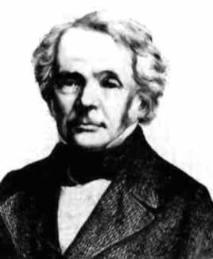
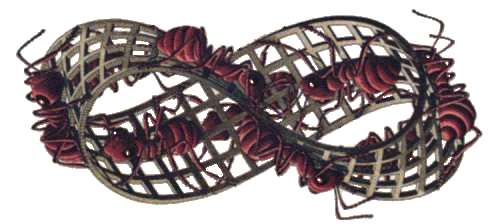

August Ferdinand Möbius

17.11.1790, Schulpforta - 26.9.1868, Leipzig
Nach einem Studium an der Universität Leipzig und Studienreisen nach Göttingen und Halle wurde Möbius 1816 auf
Empfehlung von C.F. Gauss nach Leipzig berufen, wo er 1820 Direktor der Sternwarte und 1840
ordentlicher Professor für Astronomie und Mechanik wurde. Er war massgeblich an der Ausbildung der Gymnasiallehrer in
Sachsen sowie an einer Neuorientierung der Geometrie beteiligt.

Mit dem Namen Möbius ist vor allem das Möbiusband verbunden. Dabei handelt es
sich um eine endliche gekrümmte Fläche im dreidimensionalen Raum, die keine "Oberseite" bzw. "Unterseite" besitzt.
Möbius hat sie 1858 konstruiert und 1865 publiziert.
Ein anschauliches Modell einer solchen Fläche entsteht, wenn man einen rechteckigen, langen Papierstreifen nimmt,
eine der beiden kleinen Seiten um 180° verdreht und dann die beiden kleinen Seiten zusammenklebt.
Oben sehen Sie ein solches Möbiusband, das vom holländischen Grafiker M.C. Escher stammt.
Was geschieht, wenn man ein Möbiusband längs der Mittellinie zerschneidet?